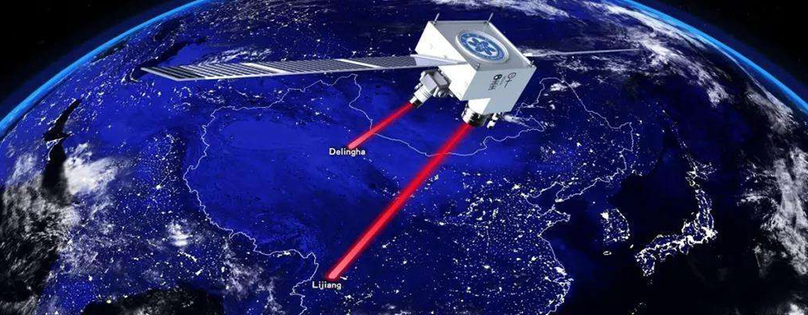
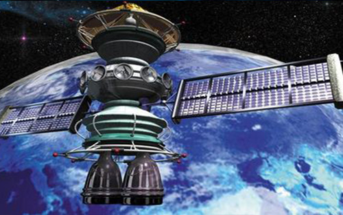
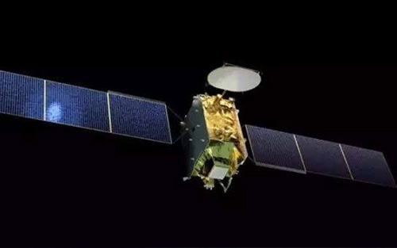

墨子号量子科学实验卫星
命名缘由
首颗量子通信卫星以我国古代科学家墨子的名字来命名。墨子最早提出过光线沿直线传播的观点，进行了小孔成像实验。用他的名字命名以纪念他在早期物理光学方面的成就。
墨子最早通过小孔成像实验发现了光是直线传播的，第一次对光直线传播进行了科学解释——这在光学中是非常重要的一条原理，为量子通信的发展打下了一定的基础。墨子还提出了某种意义上的粒子论。光量子学实验卫星以中国科学家先贤墨子来命名，体现了中国的文化自信。
“墨子号”意味着什么？
我国在世界上首次实现卫星和地面之间的量子通信，构建天地一体化的量子保密通信与科学实验体系。
墨子号 — 展示


